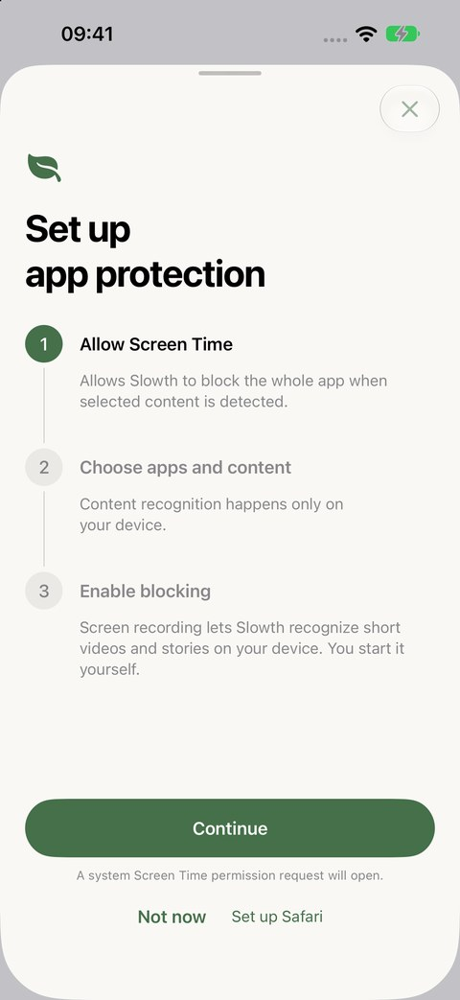

Блакаванне праграм для iPhone і iPad
Блакіруйце Reels і Shorts. Проста ў праграмах.
Блакуйце Reels, Shorts і іншыя кароткія відэа ў Instagram, YouTube, Facebook, X (Twitter) і іншых сацыяльных праграмах. Або выберыце любую праграму для блакіроўкі з дапамогай Screen Time.
Бясплатна і з адкрытым зыходным кодам Уліковы запіс не патрэбны
Пры выяўленні кароткіх відэаролікаў Slowth блакуе праграму. Выкарыстоўвае Screen Time і маніторынг экрана, які вы пачынаеце. Як гэта працуе


Унутры вашых праграм iPhone і iPad
Таксама ў Safari iPhone, iPad і Mac
На вашай прыладзе Няма ўліковага запісу. Няма адсочвання.

Вашы праграмы. Вашы правілы блакіроўкі.
Выберыце прыкладанні. Спыніце бясконцую пракрутку.
Блакуйце любыя выбраныя вамі праграмы на iPhone і iPad. Або перапыняйце кароткія відэа і гісторыі ў сацыяльных праграмах з дапамогай вызначэння кантэнту на прыладзе.
- Любое прыкладанне, якое вы выбіраеце
- Выберыце прыкладанні ў выбары Apple Screen Time — сацыяльныя сеткі, гульні і ўсё, ад чаго хочаце адпачыць. Калі маніторынг выключаны, выбраныя прыкладанні блакіруюцца; мяккая блакіроўка і часовыя паўзы змяняюцца, калі доступ дазволены.
- Reels і Shorts у дадатку
- Instagram Reels, YouTube Shorts, Facebook, X (Twitter) і іншыя сацыяльныя сеткі з кароткімі відэа: выбірайце кантэнт, які хочаце перапыніць. Калі маніторынг уключаны, выяўленне ненадоўга блакуе праграму, каб вы маглі адысці.
- Паўза, калі яна патрэбна
- Выкарыстоўвайце ліст для часовага доступу, затым вярніцеся да сваіх межаў. Праграмы і Safari падзяляюць тры паўзы ў дзень на iPhone і iPad.
Абарона праграм, крок за крокам
Наладзьце блакіроўку праграм у тры этапы.
Выберыце свае праграмы. Пачніце маніторынг, калі хочаце выявіць пэўны кантэнт.
- 1
Атрымаць Slowth
Усталюйце Slowth, адкрыйце ўкладку «Праграмы» і дазвольце Screen Time доступ. Гэта дазваляе iOS блакіраваць выбраныя вамі праграмы.
- 2
Выберыце правілы блакіроўкі
Выберыце прыкладанні, якія хочаце заблакіраваць. Для падтрымоўванага змесціва выбірайце кароткія відэа, гісторыі або абодва.
- 3
Пачаць маніторынг праграм
Націсніце «Пачаць маніторынг» і пацвердзіце падказку аб трансляцыі экрана Apple. Выяўленне працуе на вашым прыладзе; выявы экрана не захоўваюцца і не загружаюцца.
Таксама працуе ў Safari
Блакуйце адцягненне ўвагі. У вашым браўзеры таксама.
Карыстайцеся патрэбнымі вэб-сайтамі, не адцягваючы ўвагі, якія прымушаюць вас пракручваць.
- Схаваць кароткія відэа
- Схаваць YouTube Shorts і Instagram і Facebook Reels. Выдаліць Explore і трэнды на X.
- Выберыце месца заканчэння стужкі
- Элементы кіравання падачай для Instagram і Facebook памяншаюць бясконцую пракрутку. Параметр стужкі Instagram таксама ахоплівае Explore, Stories і іншыя паверхні Reels.
- Блакуйце ўвесь сайт, калі вам трэба
- Заблакіраваць увесь падтрымліваемы сайт, у тым ліку TikTok. Выбірайце налады для кожнага сайта і абнаўляйце правілы блакіроўкі па меры змены вэб-сайтаў.
Працуе на iPhone, iPad і Mac. Safari не патрабуе трансляцыі з экрана.

На вашым Mac
Менш пракруткі. З пашырэннем Safari.
Захоўвайце астатнюю частку сайта даступнай, хаваючы адцягваючыя раздзелы, або ўвогуле заблакіруйце падтрымоўваны вэб-сайт.
Падтрымка Mac прызначана для Safari. Распазнаванне ў дадатку і маніторынг экрана - гэта функцыі iPhone і iPad.
Распазнаванне праграм выкарыстоўвае трансляцыю экрана, якую вы самі запускаеце. Падчас працы Slowth атрымлівае выявы экрана, якія могуць уключаць іншыя праграмы і канфідэнцыяльную інфармацыю — выбар праграм абмяжоўвае блакіроўку, а не доступ да экрана.
У дадатку App Store выявы часова апрацоўваюцца ў памяці прылады. Кадры не захоўваюцца і не загружаюцца, а гук ігнаруецца. iOS паказвае свой індыкатар запісу, калі маніторынг актыўны.
Няма ўліковага запісу, аналітыкі або рэкламнага SDK. Safari фільтраванне лакальнае; загрузка абнаўленняў правіл па-ранейшаму робіць звычайны сеткавы запыт.
Ці магу я заблакіраваць Instagram Reels у праграме Instagram?
Так. На iPhone або iPad выберыце Instagram, уключыце блакіроўку кароткага відэа і пачніце маніторынг у Slowth. Пры выяўленні Reels Screen Time часова блакуе ўсю праграму Instagram. Slowth не выдаляе ўкладку Reels. Вы можаце выбраць гісторыі асобна. Наладзіць блакіроўку праграмы Instagram .
Ці магу я заблакіраваць YouTube Shorts у праграме YouTube?
Так. Выберыце YouTube, уключыце блакіроўку кароткага відэа і пачніце маніторынг. Slowth выяўляе Shorts і часова блакуе YouTube. Ён распрацаваны, каб дазволіць вам выкарыстоўваць іншы кантэнт паміж выяўленнямі, але пры распазнаванні могуць быць памылкі. Асобнае пашырэнне Safari хавае Shorts на сайце YouTube.
Ці магу я заблакіраваць Snapchat, TikTok або іншую праграму?
Так. Вы можаце выбраць праграмы, даступныя ў выбары Apple Screen Time, у тым ліку Snapchat і TikTok. Калі маніторынг выключаны, выбраныя абароненыя прыкладанні блакіруюцца, калі гэта не дазваляе часовы доступ або мяккая блакіроўка. Для выяўлення кароткага відэа ўключыце маніторынг. Распазнаванне залежыць ад таго, што бачна на экране, і можа дапусціць памылкі. Як працуе блакіроўка без кантролю .
Ці працуе гэта ў Facebook, X (Twitter) і іншых сацыяльных праграмах?
Так. Распазнаванне кароткага відэа працуе ў сацыяльных праграмах, у тым ліку Facebook і X (Twitter), а не абмяжоўваецца Instagram і YouTube. Выберыце праграму, абярыце кароткія відэа ці гісторыі і пачніце назіранне. Выяўленне залежыць ад макета экрана, таму можа прапусціць змесціва або заблакіраваць звычайны экран.
Ці патрэбна Safari запіс экрана?
Не. Safari выкарыстоўвае ўласнае пашырэнне для фільтрацыі падтрымоўваных вэб-сайтаў. Доступ да экрана неабходны толькі для распазнавання змесціва ў праграмах iPhone і iPad.
Што адбываецца, калі маніторынг спыняецца?
Выбраныя абароненыя праграмы звычайна блакіруюцца без запісу. Мяккая блакіроўка можа ненадоўга дазволіць праграму пасля выхаду з Slowth, а затым зноў заблакіраваць яе пры выкарыстанні. Актыўная часовая паўза доступу таксама дазваляе доступ. Прачытайце пра гэтыя рэжымы .
Ці магу я адпачыць ад блакіроўкі?
Так. На iPhone і iPad лісток дае часовы доступ да выбраных праграм і Safari. Сістэма агульнай паўзы з'яўляецца эксперыментальнай; iOS можа адкласці аднаўленне абмежаванняў. Астаткі выяўлення асобныя і не выдаткоўваюць лісце.
Што блакуе строгі рэжым?
На працягу 24 гадзін уключаныя абмежаванні нельга аслабляць. Вы можаце дадаць абмежаванні, але не можаце ўключыць блакіроўку ўсяго сайта падчас блакіроўкі. Таймер вытрымлівае перазапускі. Устанавіце, ці дазволеныя паўзы перад запускам. Гэта дапамога ў прыняцці абавязацельстваў, а не абаронены бацькоўскі кантроль.
Slowth бясплатны? Ці ёсць праграма Android?
Slowth з'яўляецца бясплатным з адкрытым зыходным кодам пад GPLv3. Android - гэта прапанаванае даследаванне і прататып працоўнага патоку, а не даступная праграма.
Зроблена з асцярожнасцю. З адкрытым зыходным кодам.
Невялікі праект. Створаны на доўгатэрміновую перспектыву.
Slowth распрацаваны і падтрымліваецца Denis Malin. Зыходны код знаходзіцца ў адкрытым доступе. Ваш водгук дапамагае палепшыць праграму.
Для фінансавых арганізацый і партнёраў
Дапамажыце людзям траціць менш часу на пракрутку.
Праект шукае аднаразовы грант у памеры 10 000 долараў на шасцімесячны этап распрацоўкі. Гэта запыт на фінансаванне.
- Больш зразумелая налада і больш надзейныя магчымасці iPhone, iPad і Mac.
- Лепшае распазнаванне кантэнту, ацэнка і тэсціраванне на сумяшчальнасць.
- Незалежная праверка скампіляваных версій прыкладанняў, ахоп грамадскасці і даследаванне магчымага прыкладання Android з эксперыментальным прататыпам.
Менш адцягваючых фактараў